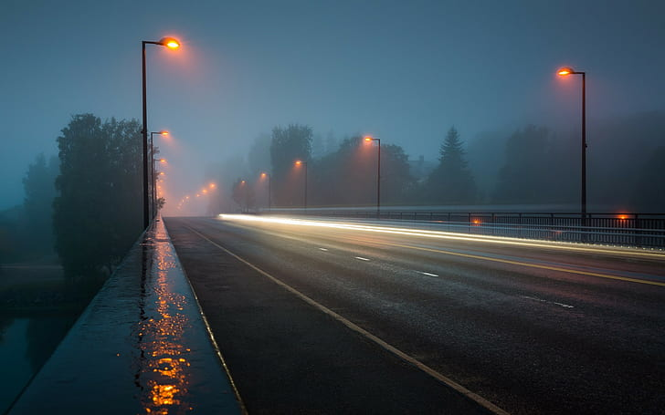

Welcome to the Astral World
Welcome to the World of Blogs. Feel free to explore the website and visit our latest and most trending blogs to ever exist.

About Us
Astral Blogs is an exciting, dark-themed platform that invites readers and writers alike to dive into the cosmos of creativity. Whether you're a seasoned blogger or just starting out, Astral Blogs offers a sleek, visually stunning interface designed to immerse you in captivating stories, unique perspectives, and bold ideas. The dark theme creates a mysterious and calming atmosphere, perfect for those late-night writing or reading sessions. Explore a wide variety of topics, connect with fellow bloggers, experience the dark vivid roads, and let your thoughts shine brightly against the deep, dark canvas of Astral Blogs!